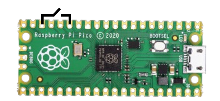

NaK
NotAKeyboard — Another USB HID device.
The name is inspired by NaK, the extremely dangerous sodium-potassium (Na and K) alloy.
This project is intended for educational and learning purposes
only. It is not designed, tested, or intended for production,
commercial, or real-world environments. The authors assume
no responsibility for misuse of this material.
Setup

- Connect GPIO11 to GND through a switch, as shown in the image above. Set the switch to OFF.
- Connect the Raspberry Pi Pico to your computer while holding down the BOOTSEL button. When it appears as a removable storage device, release BOOTSEL.
-
Download the repository and extract it. Open the
format_picofolder and copyflash_nuke.uf2to the Pico. Wait for it to restart. This erases the existing firmware. -
Open the
softwarefolder. Copyadafruit-circuitpython-raspberry_pi_pico-en_US-9.1.1.uf2to the Pico and wait for it to restart. It should appear as a drive namedCIRCUITPY. -
Copy the
libfolder to theCIRCUITPYdrive. Replace files if prompted. -
Copy
payload.py,code.py, andboot.pyto the root of the drive. Replace files if prompted.
Warning: Make sure the switch is OFF
during setup.
Payloads
Visit NaK DuckyScript converter, paste your script, and click Convert. Keep in mind that much of DuckyScript may not be supported.
- Download the converted payload.
- Connect the Pico with the switch OFF.
-
Copy the downloaded
payload.pyto the root of the Pico drive and replace the existing file if prompted.
Usage
- Eject and unplug the Pico from your computer.
- Turn the switch ON only when you are ready to use it.
Important safety warning:
When the switch is ON, the device is armed. Connecting it
to a computer while armed may execute the configured
payload very quickly. Only use authorized test devices
and systems, and verify the payload before enabling it.
Editing the payload
Turn the switch OFF, connect the Pico to your computer,
and edit payload.py as needed.
Always test payloads in a controlled environment and obtain permission before using a USB HID device on a computer you do not own or administer.